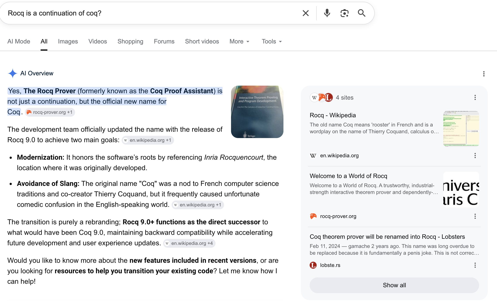
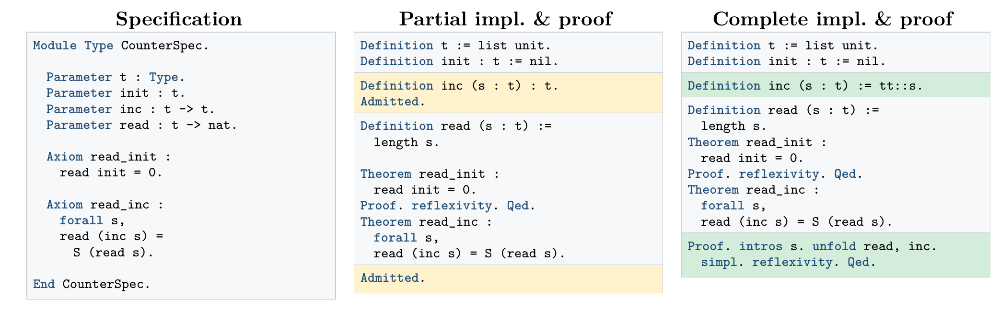
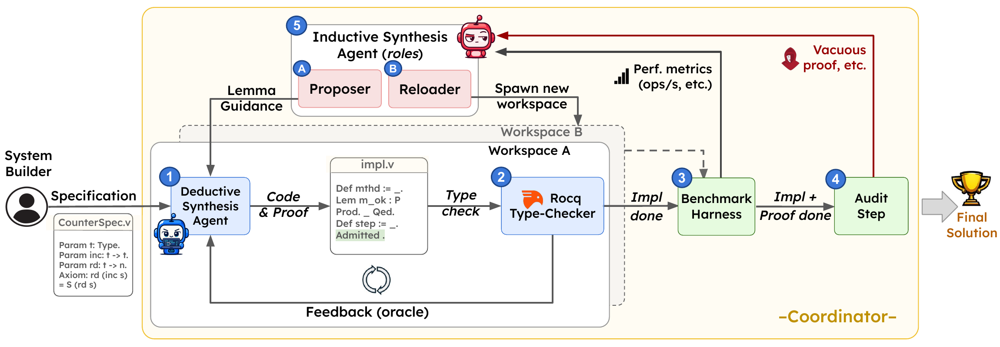

Inductive Deductive Synthesis
Enabling AI to Generate Formally Verified Systems
NeurIPS 2026 · arXiv:2605.23109
Shubham Agarwal1 ·
Alexander Krentsel1 ·
Shu Liu1 ·
Mert Cemri1 ·
Audrey Cheng1 ·
Rui Meng2 ·
Tomas Pfister2 ·
Chun-Liang Li2 ·
Sylvia Ratnasamy1 ·
Aditya Parameswaran1 ·
Matei Zaharia1 ·
Ion Stoica1 ·
Mohsen Lesani3
1UC Berkeley ·
2Google ·
3UC Santa Cruz
Formal Verification
Rocq / Coq
LLM Agents
Distributed Systems
Code + Proof
Why not just test?
Testing samples; verification proves
Testing
Checks only the inputs you happen to try
A bug in any untried case slips through
Shows the presence of bugs, never their absence
“Testing shows the presence, not the absence of bugs.” — Dijkstra
Verification
One proof covers every input at once
Holds under every interleaving of messages & failures
A guarantee of the absence of bugs
For a distributed system, the behavior space is astronomically large — no test suite can cover it.
IDS gives the agent a guarantee that holds on every possible behavior: code and a machine-checked proof, together.
What is formal verification?
An exhaustive correctness guarantee — on every input
① Specification
A precise mathematical statement of what correct means.
② Implementation
The code that actually runs.
③ Proof
A machine-checkable argument that, on every input, the impl matches the spec.
Historically — humans wrote all three
And it barely scaled: verifying a real system takes months to years of expert effort. (Chapar's KV-store proof: 9–12 months.)
IDS — human writes only the spec
From a human-written spec, IDS automatically produces both the implementation and the proof — LLM agents driven by the proof assistant Rocq.
Aside — wait, Rocq or Coq?

Background
The type-checker is a perfect oracle — even on partial work

Accept iff correct
Rocq/Coq accepts a proof iff it satisfies its proposition. No false positives, no false negatives.
Partial proofs still check
Unproven goals become deferred holes (Admitted) — the file still type-checks, so the agent knows on-track from dead-end.
Counter → distributed store
Axioms become read-your-writes; one nat becomes a per-client vector clock; tactics become an inductive simulation.
The System
IDS as a multi-agent architecture

① DSA — Deductive
Recursively decomposes component + spec into sub-parts with placeholders; type-checker ② grades every step.
⑤ ISA — Inductive
Proposer (A): helper lemmas on tactical stalls. Reloader (B): a fresh design on dead-ends.
Coordinator
Runs parallel DSAs, ③ benchmarks candidates eagerly, ④ audits closed proofs for non-vacuity.
Q1 — Hard specifications
IDS solves 7/7; SOTA agents only 2/7
| Specification |
Codex
GPT-5.4 |
Claude Code
Opus 4.6 |
IDS
GPT-5.4 |
IDS time / cost |
| Chapar Causal Consistency | 0/3 | 0/3 | 3/3 | 10 h · $148 |
| Read-Your-Writes | 3/3 | 3/3 | 3/3 | 2 h · $52 |
| Monotonic Reads | 0/3 | 0/3 | 3/3 | 7 h · $102 |
| Monotonic Writes | 2/3 | 3/3 | 3/3 | 3 h · $58 |
| RYW + MW | 0/3 | 1/3 | 3/3 | 5 h · $93 |
| Suite Causal Consistency | 0/3 | 0/3 | 2/3 | 11 h · $155 |
| Labeled Causal Consistency | 0/3 | 0/3 | 3/3 | 10 h · $136 |
| Total | 2/7 | 2/7 | 7/7 | ~6.8 h · $106 avg |
IDS runs on the same model as Codex (GPT-5.4), same prompt and budget — so 2/7→7/7 is the architecture, not the model. Chapar's proof closed in 10 h, roughly 200× faster than the cited 9–12 months of expert effort.
Beyond Rocq — cross-language generality
One agent loop, six benchmarks, four verifiers
| Benchmark | Language | Verifier | Task | Prior SOTA | IDS |
|---|
| DafnyBench | Dafny | Dafny | annotations (invariants/asserts stripped, body given) | 52 | 88 / 100 |
| miniCodeProps | Lean 4 | Lean | proof | 49 | 100 / 100 |
| Verus-Bench | Rust | Verus | annotations | 137 | 149 / 150 |
| CoqStoq | Coq | Coq | proof | 28 | 97 / 100 |
| CloverBench | Dafny | Dafny | code + annotations | — | 62 / 62 |
| VERINA | Lean 4 | Lean | code + proof | 38 | 176 / 189 |
Not one Rocq run. IDS is a language-agnostic agent loop — they instantiate it per language by editing the agent brief (CLAUDE.md) to swap the verifier, success criterion, and tool surface, then evaluate each benchmark in its native tool. On the proof-only rows (impl & spec given) the system collapses to just the DSA prover. Prior SOTA on VERINA was 38; IDS reaches 176.
Related Work
Verified codegen = spec + impl + proof — where IDS sits
| Thread | Representative work | How IDS differs |
|---|
| Specification generation |
nl2postcond, AutoSpec, Clover |
The task is intent→spec or code→spec.
IDS instead consumes a spec as input — it doesn't produce one |
| Program gen w/ evaluator |
SWE-agent, Reflexion, MetaGPT, FunSearch, AlphaEvolve, AlphaDev |
Same evaluator-guided search.
IDS's evaluator is a proof assistant: guarantees on all inputs, not sampled tests |
| Automated proof gen |
AutoVerus, Laurel (SMT); CoqGym, DeepSeek-Prover, LeanDojo, COPRA (tactic) |
Prior work fixes impl + spec, proves only.
IDS jointly generates impl + proof & optimizes performance |
| Verified synthesis |
Manna–Waldinger, Synquid, Sketch/CEGIS; VERINA, AlphaVerus; IronFleet, Verdi, FSCQ, Chapar, Iris |
Classical methods stay small; hand-built systems cost months–years.
IDS: verified synthesis at systems scale, in hours |
Anticipated Questions
What people usually ask
Doesn't this just shift the burden to writing the spec?
Yes — the paper says so. The spec is now the bottleneck. Two future directions: adversarial spec synthesis (an agent interrogating a human in natural language) and spec extraction from existing systems.
Is the proof trusted, or could the agent cheat?
The audit step rejects vacuous proofs: no remaining Admitted/axioms, the real interface implemented, non-trivial impl, correct theorem stated. They caught an agent shipping a put-guard = false.
Why Coq and not Lean / Verus?
Ecosystem maturity, plus Chapar gave a complete formal spec to start from. IDS only needs a backend with partial-proof checking, a programmatic interface, and executable extraction — Lean and Verus both qualify.
How much does a run cost / how long?
On average ~6.8 h and ~$106 per spec; max 11 h / $155. Same model and budget as the baselines, so the comparison isolates the architecture.
Is the win the model or the method?
The method. Swapping the base model (Codex → Claude) under the same prompt gains at most 6%; the IDS architecture adds +10% to +51% on cross-language benchmarks.
Does it work beyond key-value stores?
Evaluated only on distributed KV stores. The DSA-as-general-prover results across four languages suggest it transfers; other domains (OS protocols, crypto) are future work.
Inductive Deductive Synthesis
Verified systems: from a person-year bottleneck to a compute problem
7/7
specs solved (SOTA: 2/7)
3×
throughput vs. references
200×
faster than expert effort
Joint, incremental code+proof under a partial-proof oracle, with failure & performance feedback in the same loop. Generalizes to any domain with a machine-checkable correctness oracle — kernels, compilers, crypto, hardware.
Open problem ahead: writing the specification is now the bottleneck.
github.com/skydiscover-ai/skydiscover
NeurIPS 2026
Thank you — Questions?
Appendix — Why “Inductive Deductive”?
Two classic synthesis strategies, fused
Deductive — reason down from rules
Start from the spec and inference rules; derive an impl + proof that must satisfy it. Truth-preserving — guaranteed correct.
Weakness: only as good as the strategy — a bad design just grinds to a halt.
Inductive — generalize up from cases
Learn from failed attempts to hypothesize a better strategy. This is how good designs get discovered.
Weakness: generalization guarantees nothing on its own.
Complementary: deduction guarantees correctness under a strategy; induction discovers better strategies from what failed.
IDS puts both in one loop.
(“Inductive” = generalize-from-failure — not the mathematical induction the proofs happen to use internally.)